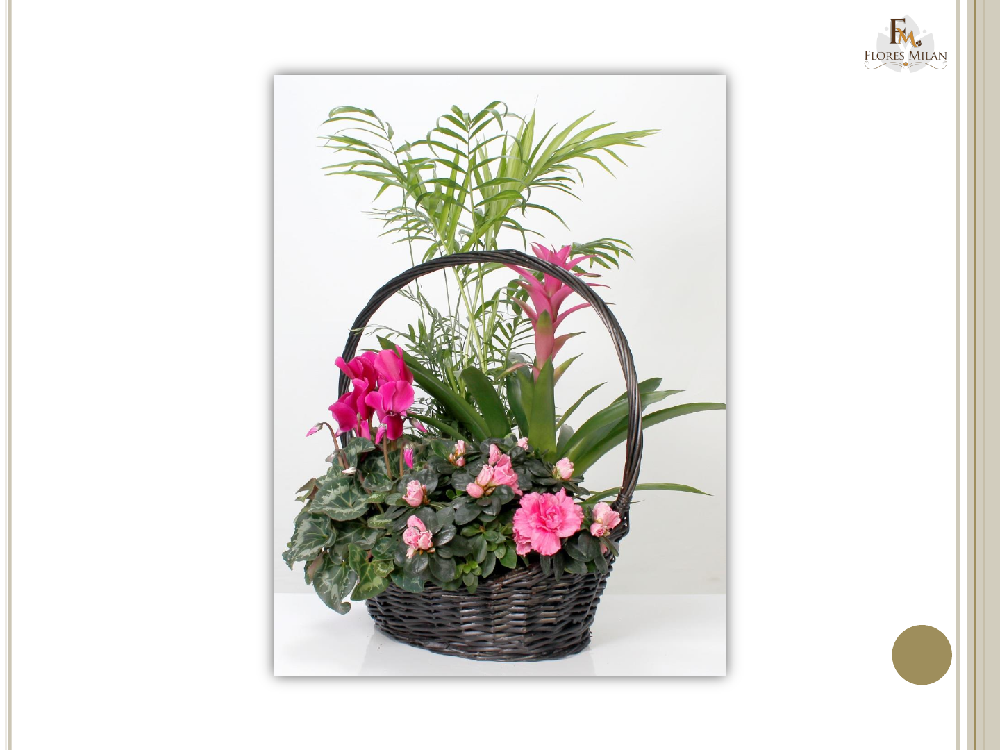

Aunque hablamos aquí de cómo hacer tu propio cesto de papel, lo cierto es que puedes crear todo tipo de objetos con este versátil y económico material, como tachos, cajas, alhajeros, bandejas y todo lo que puedas imaginar. De hecho, cuanto más los hagas, más ayudarás al entorno. Por otro lado, crear contenedores de papel no sólo te permitirá mantener el orden y la estética en tu habitación, sino también conservar las frutas y los vegetales frescos, la ropa sucia en su lugar, y prevenir olores indeseados en cualquier ambiente.
Dale una segunda oportunidad a cualquier tipo de papel!!
Nosotros proponemos un nuevo material, papel usado, como periódicos, revistas o papel de regalo, son los que mejor resultado nos dan, pero se puede usar otro. Aunque no es un material tradicional si es un elemento de origen vegetal. Tiene una ventaja frente a otras fibras, se está reutilizando un residuo por lo que podemos dar rienda suelta a nuestra creatividad, logrando nuevos objetos útiles y hermosos, a la vez que se afronta el problema de los residuos. Como bien sabes, la reutilización es una de las “tres erres”, que junto con la reducción y el reciclado.

Hablemos de la cestería...Un poco de historia.
La cestería es un oficio, artesanía o arte, en la que se fabrican objetos a partir de tiras o fibras de origen vegetal. Es una actividad tan antigua como la cerámica pero a diferencia de ésta, los objetos suelen degradarse antes y por eso nos han llegado menos vestigios arqueológicos. Es una actividad tradicional que se originó, evolucionó y expandió por prácticamente todas las culturas y civilizaciones humanas hasta la actualidad. Es un uso sostenible de los recursos naturales basado en la habilidad manual humana, ya que prácticamente no se ha logrado mecanizar. Esto ha hecho que los productos de la cestería sean más caros y hayan sido cambiados por otros productos menos naturales, más industriales
El papel enrollado es una de las técnicas para el reciclaje de papel en casa más simple y más divertida de hacer. Se trata de plegar el papel reciclado formando tiras con las cuales se crean adornos, cestos y otras manualidades para la decoración. Con rollitos de papel podemos poner en práctica diversas técnicas de reciclaje. La primera idea es muy simple. Se trata de hacer rollitos de papel reciclado que usamos para forrar un recipiente, adhiriendo el papel con cola vinílica. El resultado, son estos bonitos cuencos de papel. Con papel reciclado podemos hacer varios modelos de lámparas decorativas, como este diseño que utiliza papel de viejas revistas. También podemos utilizar los moldes para hacer lámparas de papel que hemos visto en el blog para crear con reciclaje una luminaria cálida para nuestra casa.
Los Espirales
En cestería, una de las técnicas usadas es el “arrollado”, en que el material se dispone en forma de espiral con volutas superpuestas, que se cosen. Nosotros podemos hacer algo similar, con la ventaja de no tener que coser, sino que se puede usar cola para ir uniendo las vueltas que demos a nuestras varillas.
Algo relativamente sencillo es hacer espirales planas. Se pueden hacer de diferentes tamaños si se siguen empalmando varillas. También podemos dejar un agujero en el centro de la espiral si se hace el enrollado sobre un cilindro (o un simple lápiz). Si hacemos muchas espirales las podremos unir y construir objetos como fruteros, cestas y similar. Todo lo que imagines.
Este es un mundo inmenso pues existen muchas técnicas diferentes. Si nos centramos en las cestas y similares, lo más complejo suele ser empezarlas. Lo primero que se aborda es el fondo de la cesta, que puede tener diferentes formas, luego vendrán las “paredes”, “cierre o remate” y en su caso, las “asas”. Normalmente se diferencia entre, las varillas laterales o urdimbres que suelen ser fijas (que crean la llamada “trama”), y las varillas tejedoras o cuerdas que son las que se mueven entretejiéndose entre las anteriores. Hay diversos puntos: el espiral o hélice (un caso singular en la que todas las varillas hacen de cuerda ya que ninguna se queda fija), la cuerda simple en la que la cuerda pasa en zig-zag entre las urdimbres, la cuerda doble en la que son dos las cuerdas que van moviéndose entre la trama, etc.
Descarga AQUI una guia de Cestería GRATIS
DESCARGA AQUITe dejo un videito, por si aun no te convences...
Puedes encontrar infinidad de ideas solo siguiendo el link debajo!!!
Aqui tienes nuestra ubicación, te esperamos!!
Más información
Te invito a que busques en tu barrio alguna organización que se dedique al Reciclado. Todos podemos colaborar con nuestra comunidad. El cuidado de nuestro planeta es nuestra responsabilidad. No lo Olvides y Manos a la Obra!!
...O visita nuestras redes sociales
Contáctanos via Whatsapp
--Copyright © 2021 Realizado by Sonia Trejo - Todos los derechos reservados--